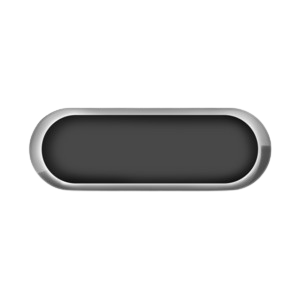
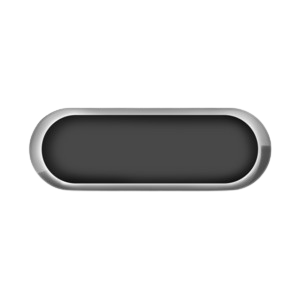
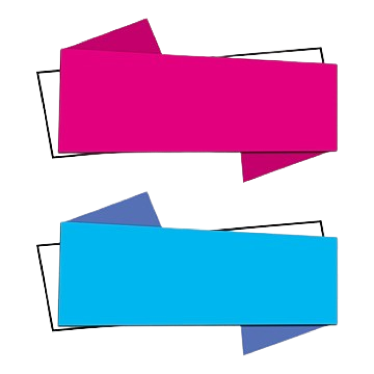

Next
Benefits of the Platform

1.Encourages More People to Participate 🤝
⇒
Anyone can take part! Whether you're an artist, musician,
programmer, or athlete, you can use your talent to support a cause.
2. Helps People Improve Their Skills 🚀
⇒
By completing challenges, participants sharpen their abilities while
doing something good for society.
3. Builds a Supportive Community 🌍
⇒
This platform connects like-minded people who share their skills,
challenge each other, and support meaningful causes together.
4. Increases Transparency in Donations 🔍
⇒
Donors can see exactly how their money is being used and track the
impact of their contributions through completed tasks and challenges.